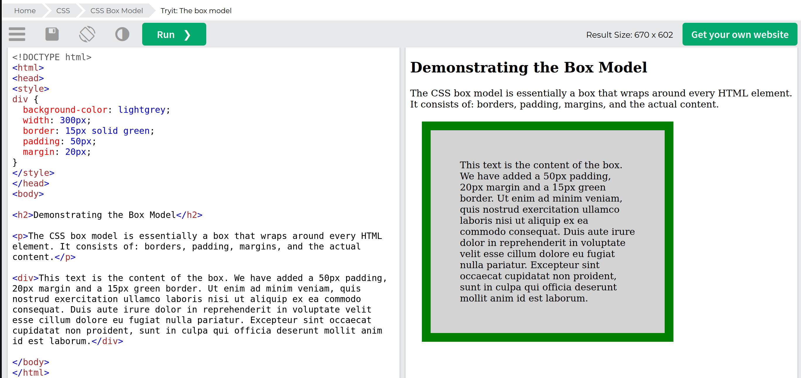
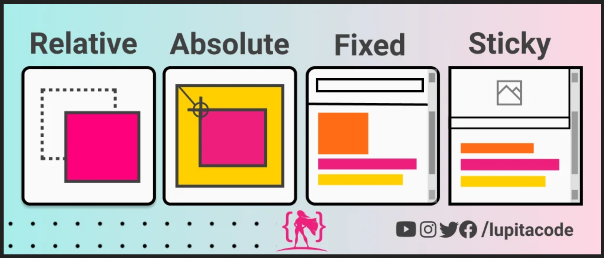
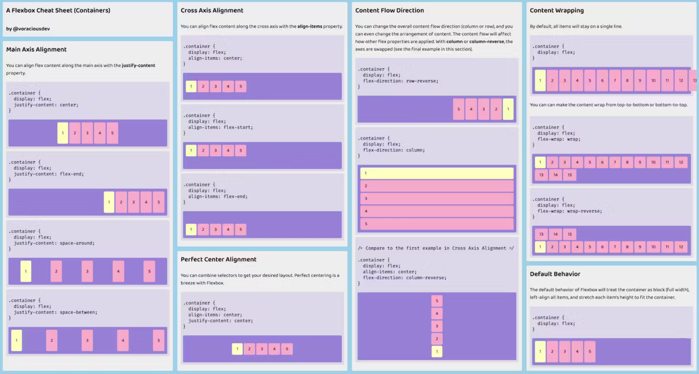
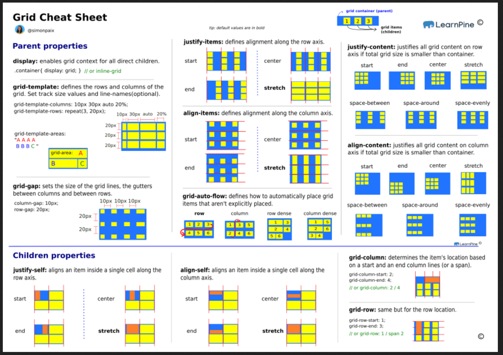

UD1 Introducció a CSS
1. El llenguatge CSS
1.1 Característiques
Les fulles d'estil CSS (Cascading Style Sheets) són un llenguatge de marques utilitzat per descriure la presentació i l'estil dels documents HTML i XML. Es tracta d'una tecnologia clau en el desenvolupament web que permet als desenvolupadors controlar l'aparença del contingut d'una pàgina web, com ara colors, tipus de lletra, mides, espaiat, disposició i altres aspectes visuals.
Amb CSS, els desenvolupadors poden aplicar estils a les diferents parts d'un document web, com ara:
-
Colors i Fons: Es pot especificar el color de fons d'un element, així com el color de text i altres elements visuals.
-
Tipus de Lletra (Fonts): Es pot definir el tipus de lletra, el seu mida i altres propietats relacionades amb el text.
-
Mides i Dimensions: Es pot controlar l'alçada, l'amplada i altres dimensions dels elements.
-
Espaiat i Marges: Es pot definir l'espaiat entre elements, així com els marges i les vores.
-
Disposició i Posicionament: Es pot controlar com es disposen i es posicionen els elements a la pàgina, com ara l'ús de caixes, flexbox, grid i altres tècniques de disposició.
-
Animacions i Transicions: Es poden crear efectes d'animació i transició per fer que els elements de la pàgina es comportin d'una manera específica en resposta a certes accions.
-
Estil de Vores: Es pot definir l'estil i la mida de les vores dels elements.
1.2 Regles
Les fulles d'estil CSS estan compostes per regles que defineixen com aplicar estils a diferents elements HTML. Una regla CSS es compon d'un selector (que indica a quins elements s'aplicarà la regla) i un bloc de declaracions (que especifica els estils que es volen aplicar als elements seleccionats).
Per exemple:
En aquest exemple, la regla CSS aplica un color blau i un mida de font de 24 píxels als elements <h1> de la pàgina web.
1.3 Afegir CSS a un document
Per afegir estils CSS a un document HTML, hi ha diverses maneres. Aquí t'explicaré les dues maneres més comunes: incrustar CSS directament al document HTML i vincular un arxiu CSS extern.
- Incrustar CSS directament al document HTML (estil en línia): Pots afegir estils CSS directament a l'element HTML utilitzant l'atribut style. Aquest és un exemple senzill:
<!DOCTYPE html>
<html>
<head>
<title>Exemple d'HTML amb CSS</title>
</head>
<body>
<h1 style="color: blue; font-size: 24px;">Títol de la pàgina</h1>
<p style="font-family: Arial, sans-serif;">Aquest és un paràgraf amb estil.</p>
</body>
</html>
- Vincular un arxiu CSS extern: Aquesta és la manera més comuna d'aplicar estils a un document HTML. Crees un arxiu CSS separat amb l'extensió .css que conté les regles de l'estil, i després vincules aquest arxiu des del teu document HTML utilitzant l'etiqueta dins de la secció :
a. Crear un arxiu CSS (per exemple, estils.css):
/* Contingut de l'arxiu estils.css */
h1 {
color: blue;
font-size: 24px;
}
p {
font-family: Arial, sans-serif;
}
<!DOCTYPE html>
<html>
<head>
<title>Exemple d'HTML amb CSS</title>
<link rel="stylesheet" href="estils.css">
</head>
<body>
<h1>Títol de la pàgina</h1>
<p>Aquest és un paràgraf amb estil.</p>
</body>
</html>
1.5 Estructura
La estructura en CSS es refereix a la manera com els estils es defineixen i organitzen en un document. Això inclou com les regles CSS s'apliquen als diferents elements HTML i com s'ordenen en un arxiu CSS. La correcta organització i estructura del codi CSS facilita la seva manteniment, reutilització i escalabilitat en projectes web més grans.
Els punts clau relacionats amb l'estructura en CSS inclouen:
-
Selectors (Selectors): Són patrons que indiquen als estils a quins elements HTML s'han d'aplicar. Poden ser selectors d'etiqueta, classes, identificadors, etc.
-
Propietats (Properties): Són les característiques estilístiques que vols aplicar als elements seleccionats. Per exemple, color, mida de font, fons, marges, etc.
-
Valors (Values): Són les definicions específiques que s'apliquen a les propietats. Per exemple, el color "blau" o la mida de font "16px".
-
Regles (Rules): Una regla CSS consisteix en un selector, seguit d'una llista de propietats i valors associats a aquest selector.
1.6 Herència
Herència en CSS:
Herència
L'herència en CSS és un mecanisme pel qual els estils d'un element pare es transmeten als seus elements fills. Quan un estil es defineix per a un element pare, aquest estil es pot heretar pels seus descendents a menys que s'override explícitament.
Per exemple, si apliquem un estil de color de text a l'element <body> de la nostra pàgina, aquest color de text es heretarà pels seus fills com ara <p>, <h1>, etc., a menys que es modifiqui aquest estil específicament per a aquests elements.
L'herència ajuda a reduir la quantitat de codi que cal escriure per aplicar estils als elements fills i permet establir estils generals a nivell de l'element pare. No totes les propietats s'hereten i algunes poden ser anul·lades pels estils específics d'un element fill. Per exemple, les propietats com el color de fons (background-color) i mides (width, height) generalment no s'hereten.
1.7 Cascada
La "cascada" en CSS fa referència a la manera com les regles de l'estil es resolen i es determina quins estils s'aplicaran a un element particular quan hi ha diverses regles CSS que afecten el mateix element. Aquest procés de resolució es basa en un conjunt de regles i prioritats establertes per les especificacions de CSS.
L'ordre de precedència en la cascada CSS està definit per la següent lògica:
-
Especificitat del Selector: Determina quina regla té més pes basant-se en la complexitat del selector. Per exemple, un selector més específic (com un selector d'identificador) té més pes que un selector més general (com un selector d'etiqueta).
-
Ordre d'aparició: Si dues regles tenen la mateixa especificitat, la que aparegui en últim lloc en l'arxiu CSS o s'especifiqui més tard tindrà prioritat i s'aplicarà.
-
Importància: Les propietats marcades com a importants (!important) tenen la màxima prioritat i es sobreescriuran per sobre de qualsevol altra regla, independentment de l'especificitat o l'ordre d'aparició.
-
Origen de l'estil: Determina la procedència de l'estil, com ara si ve d'un arxiu extern (arxiu CSS enllaçat), d'un estil en línia o d'un estil incrustat directament a l'etiqueta HTML.
Per entendre millor la cascada CSS, considera aquest exemple:
/* Estil 1 */
p {
color: red;
}
/* Estil 2 */
p {
color: blue;
}
/* Estil 3 */
#my-paragraph {
color: green !important;
}
Si apliquem les regles a un paràgraf...
S'aplicaria el color de text verd de l'Estil 3, ja que té la propietat!important. Si l'Estil 3 no existís, es prendria el color de text blau de l'Estil 2 perquè apareix en última instància. Si cap dels dos anteriors estil té l'atribut !important, s'aplicaria el color de text vermell de l'Estil 1, ja que és el primer estil especificat. Això demostra com funciona la cascada en CSS per a la determinació de l'estil.
Jerarquia de regles
La jerarquia de les regles fetes per un programador, ordenada de MENOR A MAJOR és:
- Fulles d'estil externes vinculades (emprant l'element
linken la capçalera del document). - Fulles d'estil externes importades (emprant l'element
importdins destyleen la capçalera del document). - Fulles d'estil incrustades (emprant l'element *style en la capçalera del document).
- Estils en línia (emprant l'atribut
styleen l'etiqueta de l'element). - Declaracions d'estil marcades com
!*important.
1.8 Especifitat del selector
L'especificitat del selector en CSS és una forma de determinar quina regla CSS s'aplicarà quan hi ha múltiples regles que coincideixen amb un mateix element. L'especificitat ajuda a resoldre els conflictes i a determinar quin estil té prioritat sobre un altre.
L'especificitat del selector es calcula mitjançant una combinació de diferents components, i és representada per un nombre. Es sol expressar com una sèrie de quatre valors decimals:
Els components que determinen l'especificitat del selector són els següents, en ordre d'importància:
- Nombre d'identificadors (IDs):
- Nombre de classes, atributs i pseudoclasses:
- Nombre d'elements i pseudoelements:
- Estructura del selector:
- En cas d'empat en la especificitat, la regla que aparegui en última instància en l'arxiu CSS serà la que es tingui en compte.
Per exemple, considera els següents selectors:
#menu .item a {
color: blue; /* Especificitat: 0-1-1-3 (1 ID, 2 elements) */
}
.nav a {
color: red; /* Especificitat: 0-1-0-1 (1 classe, 1 element) */
}
a {
color: green; /* Especificitat: 0-0-0-1 (1 element) */
}
En aquest cas, si apliquem aquests estils a un enllaç <a> dins d'un menú amb la classe "nav" i l'identificador "menu", s'aplicaria el color blau, ja que té l'especificitat més alta (1 ID i 2 elements). L'especificitat ajuda a resoldre quins estils s'aplicaran en situacions de conflicte.
2. Ús de CSS
2.1 Selectors
- Universal: per a tots els elements de la pàgina
- Etiqueta: corresponen directament a les etiquetes de
html.
html
- Classe (Class Selector): S'utilitza per seleccionar elements amb una mateixa classe. S'indica amb un punt (.) seguit del nom de la classe.
- Descendent: s'aplica a elements que estan dintre d'altres.
- Atribut: s'apliquen a elements que contenen un atribut.
- Pseudo-classes:s'apliquen per a "estats" dels elements.
- Pseudo-element: per a parts específiques.
- Múltiples classes:
Tens informació ampliada en aquest enllaç.
3. Unitats
3.1 Relatives
- em: Es basa en la mida de la lletra de l'element pare. Si l'element pare té una mida de lletra de 16px, 1em serà igual a 16px.
- rem: Es basa en la mida de la lletra de l'element arrel
<html>. Un rem equival a la mida de la lletra de l'element arrel. - % (percentatge): Es basa en la grandària de l'element pare. Un 50% de l'amplada, per exemple, serà la meitat de l'amplada de l'element pare.
Unitats relatives a la pantalla:
- vw (viewport width): Correspon al 1% de l'amplada de la finestra gràfica del navegador.
- vh (viewport height): Correspon al 1% de l'altura de la finestra gràfica del navegador.
- vmin (viewport minimum): És el menor entre vw i vh.
- vmax (viewport maximum): És el major entre vw i vh.
3.2 Absolutes
- cm (centímetres): Una unitat de mesura basada en el centímetre físic.
- mm (mil·límetres): Una unitat de mesura basada en el mil·límetre físic.
- in (polzades): Una unitat de mesura basada en la polzada física (1 polzada = 2.54 cm aproximadament).
- px (píxels): Una unitat de mesura basada en píxels, és una unitat absoluta, però la seva mida pot variar en funció de la densitat de píxels de la pantalla.
4. Propietats
CSS té moltes propietats
El número de propietats CSS és enorme i resulta impossible d'enumerar en un document. Per tant mostrarem les més utilitzades però tot i això caldrà que busqueu pel vostre compte.
4.1 Textos
-
font-family: Defineix la tipografia (família de lletra) que s'aplicarà al text. Especifica una llista de tipus de lletra preferits.
-
font-size: Estableix la grandària de la lletra. Pot ser en píxels, em, rem, percentatge o altres unitats de mesura.
-
font-weight: Controla el gruix de la lletra (per exemple, normal, bold, bolder).
-
font-style: Defineix l'estil de la lletra (normal, italic, oblique).
-
color: Estableix el color del text.
-
text-align: Controla l'alineació horitzontal del text (left, right, center, justify).
-
line-height: Defineix l'altura de línia, que és l'espai vertical entre les lletres.
-
letter-spacing: Ajusta l'espai entre les lletres.
-
word-spacing: Controla l'espai entre paraules.
-
text-transform: Transforma el text en majúscules, minúscules o altres estils (uppercase, lowercase, capitalize).
-
text-decoration: Controla la decoració del text, com subratllat o línia a través (underline, overline, line-through).
-
white-space: Determina com es gestiona l'espai en blanc dins del text (normal, nowrap, pre).
-
text-shadow: Afegeix ombres al text, proporcionant efectes visuals.
-
vertical-align: Controla l'aliança vertical del text dins d'un element (baseline, middle, top, bottom).
-
text-overflow: Especifica com s'ha de gestionar el desbordament del text contingut dins d'un element (ellipsis, clip).
-
overflow-wrap (word-wrap): Controla com es tallen les paraules quan superen l'ample de l'element.
-
text-align-last: Controla l'aliança del text de l'última línia en un bloc de text, en el cas que l'ample no sigui suficient.
Aquestes propietats de text en CSS et permeten personalitzar l'aspecte del text a la teva pàgina web i millorar la llegibilitat i l'estètica dels continguts. Es poden utilitzar de manera combinada per obtenir l'efecte desitjat en el text.
Ací tens exemples de les propietats anteriors:
body {
font-family: Arial, sans-serif;
}
h1 {
font-size: 36px;
}
strong {
font-weight: bold;
}
em {
font-style: italic;
}
p {
color: #333; /* Color gris fosc */
}
.centered-text {
text-align: center;
}
p {
line-height: 1.5; /* Espai entre línies d'1.5 vegades l'altura de la lletra */
}
h2 {
letter-spacing: 2px;
}
p {
word-spacing: 5px;
}
.uppercase-text {
text-transform: uppercase;
}
a {
text-decoration: underline;
}
.preformatted-text {
white-space: pre;
}
h3 {
text-shadow: 2px 2px 4px rgba(0, 0, 0, 0.5);
}
.middle-align {
vertical-align: middle;
}
.ellipsis-text {
text-overflow: ellipsis;
overflow: hidden;
white-space: nowrap;
}
.wrap-words {
overflow-wrap: break-word;
}
p {
text-align-last: justify;
}
Tutorial extra
Repasa el tutorial de formatació de textos.
4.2 Fonts
Les principals propietats de formatació de fonts en CSS permeten controlar diversos aspectes de com es mostren les tipografies en una pàgina web. Aquí estan les propietats més importants relacionades amb la formatació de fonts:
font-family: Especifica la família de tipus de lletra que es vol utilitzar. Pots proporcionar múltiples opcions per a les tipus de lletres preferides, en ordre de prioritat. Si la primera no està disponible, s'utilitzarà la següent.
-
font-size: Determina la mida de la lletra. Pots utilitzar valors en píxels (px), em (em), rem (rem), percentatges (%), punts (pt), centímetres (cm) o altres unitats de mesura.
-
font-weight: Controla l'espessor o gruix de la lletra. Valors comuns són normal, bold, bolder i valors numèrics com 100, 200, fins a 900.
-
font-style: Determina l'estil de la lletra. Pots utilitzar normal, italic o oblique.
-
font-variant: Controla si es mostra el text en majúscules (small-caps) o no.
-
font-stretch: Permet expandir o comprimir la lletra en amplada.
-
line-height: Estableix l'altura de línia, que és l'espai vertical entre línies de text.
-
letter-spacing: Controla l'espai entre les lletres.
-
word-spacing: Controla l'espai entre paraules.
-
text-transform: Transforma el text en majúscules (uppercase), minúscules (lowercase) o altres estils (capitalize).
-
color: Especifica el color de la lletra.
-
text-shadow: Afegeix ombres al text, proporcionant efectes visuals.
-
text-overflow: Controla com es gestiona el desbordament del text dins d'un element.
-
white-space: Determina com es gestiona l'espai en blanc dins del text.
Aquestes propietats són fonamentals per formatejar i estilitzar text en una pàgina web, i permeten ajustar la tipografia de manera precisa per aconseguir l'aparença desitjada. Pots utilitzar aquestes propietats en combinació per obtenir resultats de disseny específics.
Tutorial extra
Repasa el tutorial de fonts.
4.3 Taules
- Estil de taules bàsic: Per defecte, les taules tenen un aspecte senzill. Pots modificar aquest aspecte establint propietats CSS com border, padding, i margin:
table {
border-collapse: collapse; /* Fusiona les vores de les cel·les */
width: 100%; /* Amplada de la taula al 100% del contenidor */
}
th, td {
border: 1px solid black; /* Vostra de 1 píxel */
padding: 8px; /* Espai interior de la cel·la */
text-align: left; /* Alineació del text dins de la cel·la */
}
- Colors:
th {
background-color: #f2f2f2; /* Fons de la capçalera */
}
td {
background-color: #e0e0e0; /* Fons de les cel·les */
color: #333; /* Color del text */
}
- Alineacions:
Tutorial extra
Repasa el tutorial de taules.
4.4 Colors
-
color: Estableix el color del text. Pots utilitzar valors com noms de colors (com "red", "blue"), codis hexadecimals (#ff0000) o funcions de color (com "rgb(255, 0, 0)").
-
background-color: Defineix el color de fons d'un element. Pots utilitzar els mateixos valors que per a la propietat color.
-
border-color: Estableix el color de les vores d'un element. Pots utilitzar els mateixos valors que per a la propietat color.
-
outline-color: Controla el color del contorn d'un element quan s'aplica un contorn mitjançant la propietat outline.
-
box-shadow: Afegix una ombra a un element. Pots especificar el color de l'ombra, entre d'altres propietats relacionades amb l'ombra.
-
text-shadow:Afegeix ombra al text. Pots especificar el color de l'ombra de text.
-
linear-gradient: Crea un gradient lineal entre dos o més colors. S'utilitza per aplicar gradients a les propietats de fons.
-
radial-gradient: Crea un gradient radial. S'utilitza per aplicar gradients radials a les propietats de fons.
-
opacity: Controla la transparència d'un element. Un valor de 0 significa completament transparent, mentre que un valor de 1 significa totalment visible.
-
hsl i hsla: Defineix un color utilitzant l'espai de colors HSL (Hue, Saturation, Lightness). La variació "hsla" permet afegir un valor d'alfa per a transparència.
-
rgba: Defineix un color utilitzant el model de colors RGB amb un canal d'alfa per a transparència.
Aquestes propietats de colors són fonamentals per a l'estil i el disseny en CSS. Pots experimentar amb diferents valors per a cada propietat per aconseguir l'aparença desitjada per als teus elements HTML.
4.5 Bordes
Exemples d'ús de propietats per a bordes...
border: 2px solid #000; /* Amplada 2px, estil sòlid, color negre */
border-width: 1px 2px 3px 4px; /* Vora superior, dreta, inferior, esquerra */
border-style: dashed; /* Vora puntejada */
border-color: red green blue; /* Vora superior, dreta, inferior, esquerra */
border-radius: 10px; /* Totes les cantonades amb un radi de 10px */
border-top: 1px solid #ccc; /* Vora superior amb amplada de 1px, estil sòlid, color gris clar */
border-image: url('border-image.png') 20 round; /* Utilitza la imatge com a vora */
box-shadow: 2px 2px 5px rgba(0, 0, 0, 0.5); /* Ombra de 2px a la dreta i a baix amb desenfocament de 5px i color semi-transparent */
Tutorial extra
Repasa el tutorial de bordes.
4.6 Altres propietats.
Com hem dit el número de propietats en CSS és enorme i si les volem posar en un document acabarem amb un document de centenars de pàgines. Per tant és recomanable que pegueu una ullada a la resta de propietats que es poden definir en CSS al tutorial de la w3wchool.
5. Box Model
El box model (model de caixa) en CSS és un concepte fonamental que descriu com es representa visualment un element HTML en una pàgina web. L'element HTML es representa com una caixa rectangular, amb diferents parts que defineixen les seves dimensions i aparença.
El model de caixa consta de quatre components principals, cadascun amb la seva funció i propietats associades:
- Content (contingut):
És la part central de la caixa i conté el contingut real, com text, imatges o altres elements HTML.
-
Padding (ompliment): És l'espai entre el contingut i la vora de la caixa. Controla l'espai intern de la caixa, és a dir, l'espai entre el contingut i la vora.
-
Border (vora): És la línia que envolta el contingut i el padding. Defineix la vora de la caixa, amb opcions com amplada, estil (sòlid, puntejat, etc.) i color.
-
Margin (marge): És l'espai entre la vora de la caixa i els elements adjacents (altres caixes). Controla l'espai extern de la caixa, és a dir, l'espai entre la caixa i altres elements.
Aquesta estructura del box model és essencial per a la gestió del disseny i la disposició d'elements en una pàgina web. Les propietats com width, height, padding, border, i margin influeixen directament en com es representa i comporta l'element dins de la pàgina.

Vegem un exemple:

6. Posicionament
Les propietats de posicionament en CSS són utilitzades per controlar la ubicació i la disposició dels elements HTML en una pàgina web. Aquestes propietats són fonamentals per crear dissenys complexos i disposicions precises. Aquí tens algunes de les propietats de posicionament més importants:
-
position: Defineix el mètode de posicionament d'un element. Pot tenir els valors: - static (predeterminat): L'element segueix l'ordre normal del flux de la pàgina. - relative: L'element es posiciona de forma relativa a la seva posició original. - absolute: L'element es posiciona de forma absoluta respecte al primer element pare no positiu. - fixed: L'element es posiciona de forma fixa respecte a la finestra del navegador. - sticky: L'element es comporta com a relative fins que es desplaça fora de la vista, moment en què es comporta com a fixed.
-
top, right, bottom, left: Defineixen la distància de l'element respecte als marges de la seva posició segons la propietat position. Per exemple, top: 10px mou l'element 10 píxels des del marge superior.
-
z-index: Determina l'ordre d'empilament (z-index) dels elements sobreposats. Un valor més alt enviarà l'element cap a la part superior.
-
float: Defineix com l'element es desplaça dins del seu contenidor. Els valors poden ser left, right o none. S'utilitza principalment per a la disposició de columnes.
-
clear: Controla com els elements gestionen el desbordament de flotants. Pot prendre valors com left, right, both, o none.
-
display: Controla com l'element es mostra en la pàgina. Pot tenir valors com block, inline, inline-block, flex, grid, entre d'altres.
Aquestes propietats són fonamentals per aconseguir un posicionament precís i flexible dels elements en una pàgina web, permetent la creació de dissenys complexos i responsius.

Tutorial extra
Consulta el tutorial de posicionament
7. FLEX
- display: flex és una propietat en CSS que permet crear dissenys flexibles i dinàmics en una pàgina web. El model de disseny flexible (Flexbox) proporciona una forma eficient i senzilla d'organitzar i distribuir elements HTML en una fila o en una columna, segons les necessitats de disseny.
Al utilitzar display: flex en un element pare, aquest es converteix en un "flex container" i els seus fills directes es converteixen en "flex items". Aquesta disposició flex permet el posicionament i l'ajustament automàtic dels elements fills dins del flex container.
Principals propietats i conceptes relacionats amb Flexbox:
-
flex-direction: Controla la direcció de l'espai principal en què els elements flexibles es disposen. Pot ser row (per defecte, horitzontal), row-reverse, column, o column-reverse.
-
justify-content: Controla com s'ubiquen els elements flexibles en l'eix principal. Permet ajustar-los cap a la dreta, cap a l'esquerra o centrar-los, entre d'altres opcions.
-
align-items: Controla com s'ubiquen els elements flexibles en l'eix secundari. Permet alinear-los a la part superior, al centre, a la part inferior, etc.
-
align-self: Permet als elements flexibles substituir l'alineació especificada pel align-items en el flex container.
-
flex: Combina flex-grow, flex-shrink, i flex-basis en una propietat. Controla la flexibilitat i l'amplada inicial dels elements flexibles.
-
flex-grow: Determina com es distribueix l'espai addicional entre els elements flexibles quan hi ha més espai disponible.
-
flex-shrink: Controla com es redueixen els elements flexibles quan hi ha menys espai disponible.
-
flex-basis: Estableix l'amplada inicial d'un element flexible abans de considerar flex-grow i flex-shrink.
-
flex-wrap: Controla si els elements flexibles es col·loquen en una sola línia o si es permeten múltiples línies.
-
order: Determina l'ordre en què es mostren els elements flexibles dins del flex container.
Amb Flexbox, és possible crear dissenys més senzills i reactius sense haver de recórrer a tècniques complicades de posicionament. Aquesta tecnologia és molt útil per a la creació d'interfícies de l'usuari, la disposició d'elements en columnes o files, l'ajustament de l'espai disponible i moltes altres aplicacions de disseny web.

Tutorial extra
Consulta el tutorial il·lustrat
8. Grid
CSS Grid Layout, comunament anomenat Grid, és un sistema de disseny bidimensional en CSS que permet la creació de matrius flexibles per a la disposició d'elements en una pàgina web. Aquest sistema ofereix un control detallat i precís sobre la distribució i l'organització d'elements en files i columnes.
Amb CSS Grid, pots crear dissenys complexes i responre fàcilment als diferents dispositius sense haver d'utilitzar tècniques complicades o combinades.

CSS Grid Layout, comunament anomenat "Grid", és un sistema de disseny bidimensional en CSS que permet la creació de matrius flexibles per a la disposició d'elements en una pàgina web. Aquest sistema ofereix un control detallat i precís sobre la distribució i l'organització d'elements en files i columnes.
Amb CSS Grid, pots crear dissenys complexes i responre fàcilment als diferents dispositius sense haver d'utilitzar tècniques complicades o combinades. Alguns dels conceptes principals relacionats amb CSS Grid inclouen:
-
Grid Container: És l'element pare que conté tots els elements que formen part de la graella.
-
Grid Item: Són els elements interns de la graella que s'ubiquen dins del grid container.
-
Grid Line: Són les línies que defineixen les divisions de la graella, com ara línies de columna i línies de fila.
-
Grid Cell: És l'espai entre dues línies consecutives de columna i fila. Cada cell pot contenir un o més elements.
-
Grid Track: És la regió entre dues línies de graella consecutives en la direcció de les columnes o les files.
-
Grid Area: És un conjunt de cel·les de graella que es defineixen pel seu nom.
Principals propietats i conceptes relacionats amb CSS Grid:
-
grid-template-columns, grid-template-rows: Defineixen el nombre, l'amplada i les proporcions de les columnes i files de la graella.
-
grid-column, grid-row: Especifiquen la ubicació d'un element respecte a les columnes i files de la graella.
-
grid-column-gap, grid-row-gap, grid-gap: Defineixen l'espai entre les columnes, les files o tots dos dins de la graella.
-
grid-template-areas: Permet definir l'estructura de la graella mitjançant noms de àrees, facilitant la disposició d'elements en blocs.
-
justify-items, align-items: Controlen l'alineació dels elements dins de les cel·les de la graella en l'eix principal i secundari.
-
justify-content, align-content: Controlen la ubicació del contingut dins de la graella en l'eix principal i secundari.
CSS Grid proporciona una forma més avançada i flexible de crear dissenys comparat amb altres mètodes com Flexbox o el model de caixa. Amb la seva capacitat per organitzar elements en files i columnes, facilita la creació d'interfícies complexes i pot ser un recurs molt útil per al disseny web modern.
Tutorial extra
Grid és un sistema bastant extens com per a incloure-lo en el document, repassa per tant el tutorial de Grid.
Revisa també el següent tutorial il·lustrat